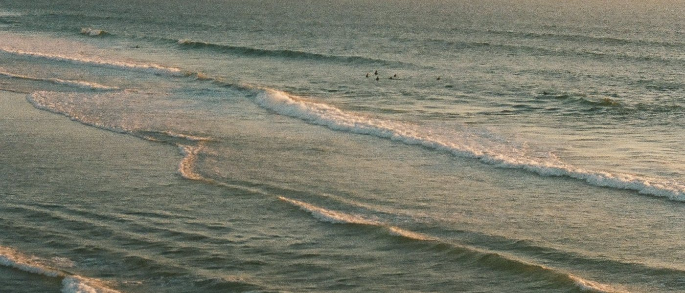

Coffee and breakfast at the airport end of Lyall Bay.
Flat whites, fry-ups and fish tacos across the road from the break, with the planes coming in low over the deck.
The water
Checking nowHaving a look.
- Swell
- Wind
- Gusts km/h
- Sea
Live from Open-Meteo, refreshed every 15 minutes.
Visit
Airport end of Lyall Parade, across from the beach.
- Monday6:30 to 3
- Tuesday6:30 to 3
- Wednesday6:30 to 3
- Thursday6:30 to 3
- Friday6:30 to 3
- Saturday7 to 3:30
- Sunday7 to 3:30
Free parking on the parade. The number 3 bus stops at Onepu Road.
Twelve seats inside, eight on the deck. Dogs welcome outside.
Open in Google Maps
Your Google reviews go here
A real site pulls these in automatically. This concept has none, because the cafe isn't real.